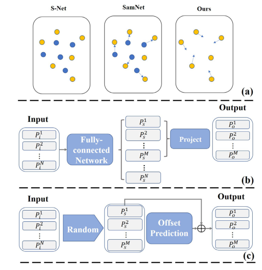
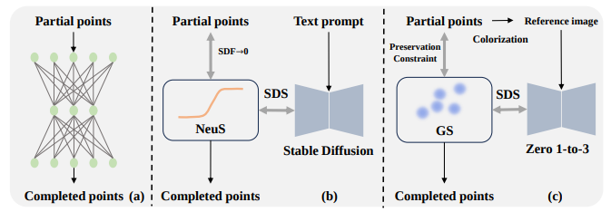
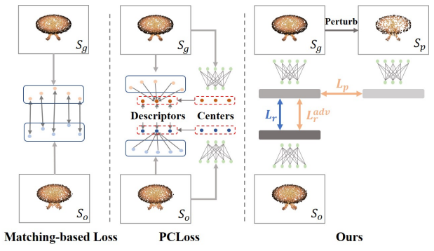
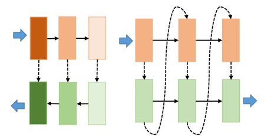

Tianxin Huang
School of Computing
|
|
Biography [CV]
I am currently a Research Fellow (Postdoc) in National University of Singapore (NUS), School of Computing, in which I am in collaboration with Prof. Gim Hee Lee in 3D Computer Vision. Before that, I received the Doctor's Degree at April Lab, Zhejiang University (ZJU), under the supervision of Prof. Yong Liu. I received the Bachelor degree in Mechanical Engineering from Xi'an Jiaotong University (XJTU) in 2017. My current research interests includes but not limited on:
3D Point Cloud Geometry Analysis
3D Human Face Modeling
3D Scene Understanding and Reconstruction
Recent News
| Sep, 2024 | Three papers (Deface, FreeSplat, VCR-Gaus) are accepted by NeurIPS 2024! Congratulation to all the co-authors! |
| March, 2024 | Two papers are accepted by CVPR 2024! |
| June, 2023 | I join the group led by Gim Hee Lee as a Research Fellow (Postdoc)! |
| March, 2023 | One paper is accepted by CVPR 2023! |
Selected Publications [Google Scholar]
 |
Learning to Decouple the Lights for 3D Face Texture Modeling.
Tianxin Huang, Zhenyu Zhang, Ying Tai, Gim Hee Lee.
NeurIPS'24
[project]
|
|  |
3QNet: 3D Point Cloud Geometry Quantization Compression Network.
Tianxin Huang, Jiangning Zhang, Jun Chen, Zhonggan Ding, Ying Tai, Zhenyu Zhang, Chengjie Wang, Yong Liu.
Siggraph Asia'22/TOG
|
 |
FreeSplat: Generalizable 3D Gaussian Splatting Towards Free-View Synthesis of Indoor Scenes.
Yunsong Wang,Tianxin Huang, Hanlin Chen, Gim Hee Lee.
NeurIPS'24
[Project]
|
 |
VCR-GauS: View Consistent Depth-Normal Regularizer for Gaussian Surface Reconstruction.
Hanlin Chen, Fangyin Wei, Chen Li, Tianxin Huang, Yunsong Wang, Gim Hee Lee
NeurIPS'24
[Project]
|
|  |
Zero-shot Point Cloud Completion Via 2D Priors.
Tianxin Huang, Zhiwen Yan, Yuyang Zhao, Gim Hee Lee.
Arxiv'24
[paper]
|
|  |
Learning to Measure the Point Cloud Reconstruction Loss in a Representation Space.
Tianxin Huang, Zhonggan Ding, Jiangning Zhang, Ying Tai, Zhenyu Zhang, Mingang Chen, Chengjie Wang, Yong Liu.
CVPR'23
|
|  |
RFNet: Recurrent Forward Network for Dense Point Cloud Completion.
Tianxin Huang, Hao Zou, Jinhao Cui, Xuemeng Yang, Mengmeng Wang, Xiangrui Zhao, Jiangning ZHang, Yi Yuan, Yifan Xu, Yong Liu.
ICCV'21
|
 |
Resolution-free Point Cloud Sampling Network with Data Distillation.
Tianxin Huang, Jiangning Zhang, Jun Chen, Yuang Liu, Yong Liu.
ECCV'22
|
 |
Learning to Train a Point Cloud Reconstruction Network without Matching.
Tianxin Huang, Xuemeng Yang, Jiangning Zhang, Jinhao Cui, Hao Zou, Jun Chen, Xiangrui Zhao, Yong Liu.
ECCV'22
|
 |
3D Point Cloud Geometry Compression on Deep Learning.
Tianxin Huang, Yong Liu.
ACM MM'19 Oral
[paper]
|
Experiences

|
Feb. 2022 - Feb. 2023, Tencent Youtu.,Ltd. Internship, worked with: Dr. Zhenyu Zhang and Dr. Ying Tai |
Professional Services
IEEE Conference on Computer Vision and Pattern Recognition (CVPR)
IEEE International Conference on Computer Vision (ICCV)
Annual Conference on Neural Information Processing Systems (NeurIPS)
International Conference on Learning Representations (ICLR)
Eurographics (EG)
The British Machine Vision Conference (BMVC)
International Conference on Intelligent Robots and Systems (IROS)
ACM SIGGRAPH Asia
IEEE Transaction on Multimedia (TMM)
IEEE Transactions on Intelligent Vehicles (TIV)
IEEE Transactions on Neural Networks and Learning Systems (TNNLS)
ACM Transactions on Multimedia Computing Communications and Applications (TOMM)
IEEE Transactions on Pattern Analysis and Machine Intelligence (TPAMI)
Journal of Field Robotics (JFR)
Talking
| 2020-2021 | The First International Forum on 3D Optical Sensing and Applications | 3D POINT CLOUD GEOMETRY COMPRESSION BASED ON DEEP LEARNING |